Act I · The tension
We surveyed 171 women aged 30 who work full time and found mean earnings of $41,413. We do not care about these 171 people as such. We care about all 30-year-old women working full time in the U.S. in 2010.
The sample mean \(\bar{x}\) is our best guess of the population mean \(\mu\), but it is only one draw: another sample of 171 would give a different number. Statistical inference turns that single number into a statement with quantified uncertainty, either a range (a confidence interval) or a verdict on a claim (a hypothesis test).
The whole chapter answers one question: how far from \(\mu\) could \(\bar{x}\) plausibly be?
| Stop | Question | Tool | Headline result |
|---|---|---|---|
| 4.1 | How precise is one sample mean? | standard error \(s/\sqrt{n}\) | $41,413, SE $1,952 |
| 4.2 | Which ruler do we measure with? | \(t\) distribution | \(t_{170,\,0.025} = 1.974\) |
| 4.3 | What values of \(\mu\) are plausible? | confidence interval | 95% CI [$37,559, $45,266] |
| 4.4 | Is \(\mu = \$40{,}000\) credible? | two-sided \(t\) test, power | \(t = 0.72\), \(p = 0.470\) |
| 4.5 | Gas, male earnings, GDP growth | three tests | only gas rejects (\(t = -5.26\)) |
| 4.6 | Does \(\mu\) exceed $40,000? | one-sided test | \(p = 0.235\) |
| 4.7 | Is the race tied? | proportions, \(z\) test | 52.1%, \(p = 0.199\) |
| CS 1 | Has world productivity changed? | CIs, Welch & paired tests | paired \(t = 10.90\) |
| CS 2 | Is Bolivia’s development equal? | CIs, one- & two-sample tests | Tarija − Pando = 14.7 points |
| Synthesis | What did all the tests say? | one ruler, one checklist | — |
\[t \;=\; \frac{\text{estimate} \;-\; \text{hypothesized value}}{\text{standard error}} \qquad\qquad \text{CI} \;=\; \text{estimate} \;\pm\; \text{critical value} \times \text{standard error}\]
Learn this pair of formulas once and you can read every inference table in the book.
A test never proves \(H_0\). It only asks whether the data can reject it.
| Question | Answered by | Fails when… |
|---|---|---|
| Is it real? | \(t\), \(p\)-value, CI | the gap is small relative to the SE |
| Does it matter? | the size of the gap, in units people care about | a precise estimate of a trivial gap |
| Could we even tell? | power, the width of the CI | a real gap hidden by a large SE |
Every example in this deck gets all three questions. Statistical significance answers only the first.
Sections 4.1–4.7 · estimate, interval, test
Sample mean · standard deviation · standard error
Data. AED_EARNINGS.DTA: 171 women aged 30 working full time in the U.S. in 2010, annual earnings in dollars.
| Symbol | Name | Measures |
|---|---|---|
| \(\bar{x}\) | sample mean | our point estimate of the population mean \(\mu\) |
| \(s\) | sample standard deviation | how much individual earnings vary |
| \(\text{se}(\bar{x}) = s/\sqrt{n}\) | standard error | how much the sample mean would vary across samples |
Two different spreads: \(s\) describes people; the standard error describes our estimate.
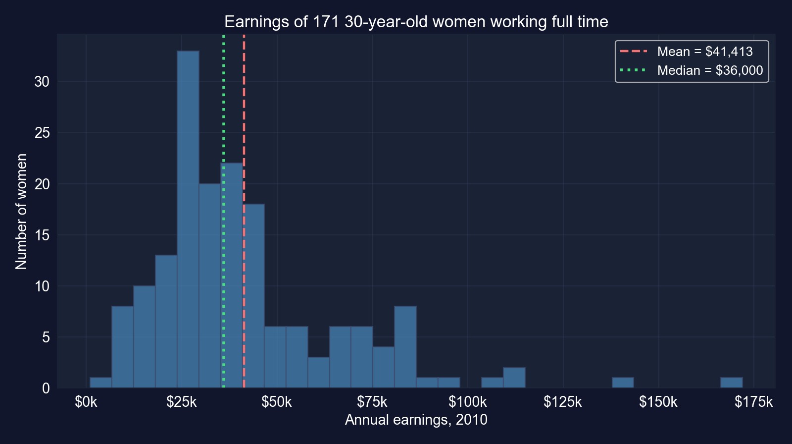
Earnings of the 171 women. The mean ($41,413) sits above the median ($36,000).
64% of the women earn less than the mean. Inference here is about the mean, which is not the typical earner.
import numpy as np # square roots
import pandas as pd # tabular data
from scipy import stats # t and normal distributions (used later)
url = "https://raw.githubusercontent.com/quarcs-lab/data-open/master/AED/AED_EARNINGS.DTA"
data_earnings = pd.read_stata(url) # 171 women aged 30, full-time, 2010
earnings = data_earnings["earnings"] # annual earnings in dollars
n = len(earnings) # sample size
mean_earnings = earnings.mean() # sample mean x-bar
std_earnings = earnings.std(ddof=1) # sample std dev s (divides by n - 1)
se_earnings = std_earnings / np.sqrt(n) # standard error = s / sqrt(n)
print(f"n = {n}") # 171
print(f"Mean: ${mean_earnings:,.2f}") # point estimate of mu
print(f"Std dev: ${std_earnings:,.2f}") # spread across women
print(f"Std error: ${se_earnings:,.2f}") # spread of x-bar across samples| Statistic | Value |
|---|---|
| \(n\) | 171 |
| Mean \(\bar{x}\) | $41,412.69 |
| Median | $36,000.00 |
| Std. deviation \(s\) | $25,527.05 |
| Std. error \(s/\sqrt{n}\) | $1,952.10 |
\(\text{se} = 25{,}527.05/\sqrt{171} = 1{,}952.10\)
How the SE scales with \(n\) (same \(s\)):
| Sample size | SE |
|---|---|
| \(n = 43\) (¼ as many) | $3,893 |
| \(n = 171\) (ours) | $1,952 |
| \(n = 684\) (4× as many) | $976 |
Individual earnings vary by about $25,500, but the average of 171 of them varies by only about $1,950.
Key Concept 4.1: the standard error is the single number behind every interval and test that follows.
The SE measures sampling noise only, and only under independence. GDP growth in 4.5 will show what happens when independence fails.
\(t\) statistic · degrees of freedom · fat tails
\[t = \frac{\bar{x} - \mu}{\text{se}(\bar{x})} = \frac{\bar{x} - \mu}{s/\sqrt{n}} \;\sim\; T(n-1)\]
Fatter tails mean bigger critical values: the price of not knowing \(\sigma\).
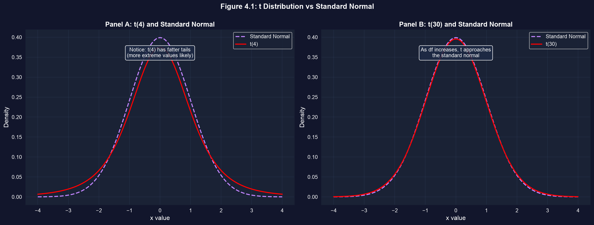
Panel A: \(t(4)\) has much fatter tails than the standard normal. Panel B: \(t(30)\) is already close to it.
With 4 degrees of freedom, values beyond ±2 are over twice as likely as under the normal.
from scipy import stats # t and normal distributions
for df in [4, 9, 30, 99, 170]: # degrees of freedom = n - 1
t_crit = stats.t.ppf(0.975, df) # 97.5th percentile: two-sided 5% cutoff
print(f"df = {df:>3}: t critical = {t_crit:.3f}")
z_crit = stats.norm.ppf(0.975) # the normal's cutoff, for comparison
print(f"normal: z critical = {z_crit:.3f}") # 1.960Computed for these slides; Exercise 3 of the chapter asks for the \(n = 10\) and \(n = 100\) cases.
| Degrees of freedom | Sample size \(n\) | 5% two-sided critical value |
|---|---|---|
| 4 | 5 | 2.776 |
| 9 | 10 | 2.262 |
| 30 | 31 | 2.042 |
| 99 | 100 | 1.984 |
| 170 | 171 | 1.974 |
| normal (\(\infty\)) | — | 1.960 |
For our sample the \(t\) critical value 1.974 is within 1% of 1.96, which is why the “estimate ± 2 SE” rule of thumb works.
Confidence intervals · margin of error · the confidence–precision trade-off
\[\bar{x} \;\pm\; t_{n-1,\,\alpha/2} \times \text{se}(\bar{x})\]
The interval is random; \(\mu\) is fixed. The 95% describes the method, not this one interval.
import numpy as np # square roots
import pandas as pd # tabular data
from scipy import stats # t distribution
url = "https://raw.githubusercontent.com/quarcs-lab/data-open/master/AED/AED_EARNINGS.DTA"
earnings = pd.read_stata(url)["earnings"] # 171 women, annual earnings
n = len(earnings) # sample size
mean_earnings = earnings.mean() # x-bar
se_earnings = earnings.std(ddof=1) / np.sqrt(n) # s / sqrt(n)
conf_level = 0.95 # confidence level
alpha = 1 - conf_level # 0.05
t_crit = stats.t.ppf(1 - alpha/2, n - 1) # critical value t(170, 0.025)
margin_of_error = t_crit * se_earnings # half-width of the interval
print(mean_earnings - margin_of_error, mean_earnings + margin_of_error) # the CI| Component | Value |
|---|---|
| Sample mean \(\bar{x}\) | $41,412.69 |
| Standard error | $1,952.10 |
| Critical value \(t_{170,\,0.025}\) | 1.9740 |
| Margin of error \(1.9740 \times 1{,}952.10\) | $3,853.48 |
| 95% confidence interval | [$37,559.21, $45,266.17] |
Width $7,707 · computed with the \(t(170)\) distribution
The data are consistent with any population mean between about $37,600 and $45,300.
The interval is about the mean. Individual earnings range from $1,050 to $172,000.
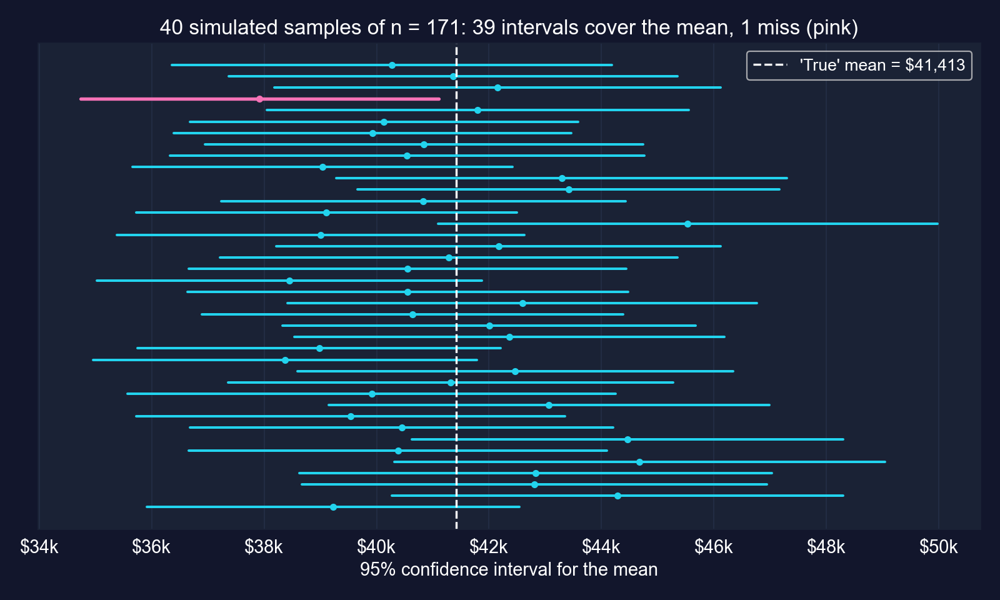
Each line is the 95% CI from one simulated sample of 171, resampled from the 171 earnings as if they were the population. The pink interval misses.
Each interval either contains \(\mu\) or it does not. The 95% is the long-run hit rate of the procedure.
# continues from the previous block (n, mean_earnings, se_earnings defined)
for conf in [0.90, 0.95, 0.99]: # three confidence levels
alpha = 1 - conf # tail probability, split in two
t_crit = stats.t.ppf(1 - alpha/2, n - 1) # larger for higher confidence
ci_lower = mean_earnings - t_crit * se_earnings # lower bound
ci_upper = mean_earnings + t_crit * se_earnings # upper bound
width = ci_upper - ci_lower # full width of the interval
label = f"{conf*100:.0f}%" # "90%", "95%", "99%"
print(f"{label:<5} t={t_crit:.3f} [{ci_lower:,.2f}, {ci_upper:,.2f}] width {width:,.2f}")| Level | Critical value | Lower | Upper | Width |
|---|---|---|---|---|
| 90% | 1.654 | $38,184.17 | $44,641.21 | $6,457.03 |
| 95% | 1.974 | $37,559.21 | $45,266.17 | $7,706.97 |
| 99% | 2.605 | $36,327.35 | $46,498.03 | $10,170.68 |
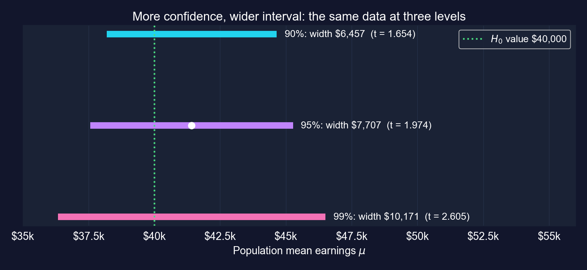
Going from 90% to 99% confidence makes the interval 58% wider. Only a larger sample buys both confidence and precision.
Two-sided test · \(p\)-value · critical value · Type I and II errors · power
\[H_0: \mu = \mu_0 \quad \text{vs} \quad H_a: \mu \neq \mu_0 \qquad\qquad t = \frac{\bar{x} - \mu_0}{\text{se}(\bar{x})} \sim T(n-1) \text{ if } H_0 \text{ is true}\]
The test measures the gap between estimate and claim in standard errors, then asks how unusual that gap would be if the claim were true.
import numpy as np # square roots
import pandas as pd # tabular data
from scipy import stats # t distribution
url = "https://raw.githubusercontent.com/quarcs-lab/data-open/master/AED/AED_EARNINGS.DTA"
earnings = pd.read_stata(url)["earnings"] # 171 women, annual earnings
n, mean_earnings = len(earnings), earnings.mean() # n and x-bar
se_earnings = earnings.std(ddof=1) / np.sqrt(n) # standard error
mu0 = 40000 # hypothesized value under H0
t_stat = (mean_earnings - mu0) / se_earnings # distance in SEs
p_value = 2 * (1 - stats.t.cdf(abs(t_stat), n - 1)) # two-sided p-value
t_crit_95 = stats.t.ppf(0.975, n - 1) # critical value for alpha = 0.05
print(f"t = {t_stat:.4f}, p = {p_value:.4f}, critical = ±{t_crit_95:.4f}")
print("Reject H0" if p_value < 0.05 else "Do not reject H0") # the decision| Value | |
|---|---|
| \(\bar{x} - \mu_0\) | $1,412.69 |
| Standard error | $1,952.10 |
| \(t\)-statistic | 0.7237 |
| \(p\)-value (two-sided) | 0.4703 |
| Critical value | ±1.9740 |
| Decision at \(\alpha = 0.05\) | do not reject |
\(\$40{,}000\) lies inside the 95% CI [$37,559, $45,266]
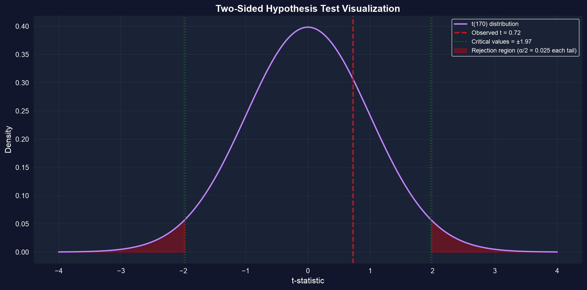
The sample mean is less than one standard error from $40,000, an ordinary amount of sampling noise.
Key Concept 4.6: “fail to reject” is not “accept”. Report the confidence interval, which says how large a difference the data still allow.
| \(H_0\) true in reality | \(H_0\) false in reality | |
|---|---|---|
| Reject \(H_0\) | Type I error (false alarm), probability \(\alpha\) | correct: power \(= 1-\beta\) |
| Do not reject \(H_0\) | correct, probability \(1-\alpha\) | Type II error (missed effect), probability \(\beta\) |
In the earnings test we did not reject, so the only mistake we could have made is a Type II error.
# continues from the previous block (earnings, mu0 defined) — computed for these slides
s = earnings.std(ddof=1) # sample std dev, treated as known
for n_size in [171, 684]: # our sample, and 4x larger
se = s / np.sqrt(n_size) # standard error at this n
df, c = n_size - 1, stats.t.ppf(0.975, n_size - 1) # df and 5% critical value
nc = (41412.69 - mu0) / se # gap in SEs if the true mean were $41,412.69
power = stats.nct.sf(c, df, nc) + stats.nct.cdf(-c, df, nc) # P(|T| > c)
print(f"n = {n_size}: power = {power:.3f}") # probability of rejecting H0| True mean | \(n = 171\) | \(n = 684\) |
|---|---|---|
| $41,413 | 0.11 | 0.30 |
| $45,000 | 0.72 | 1.00 |
Power of the two-sided 5% test of \(\mu = \$40{,}000\)
Smallest gap detected with 80% power:
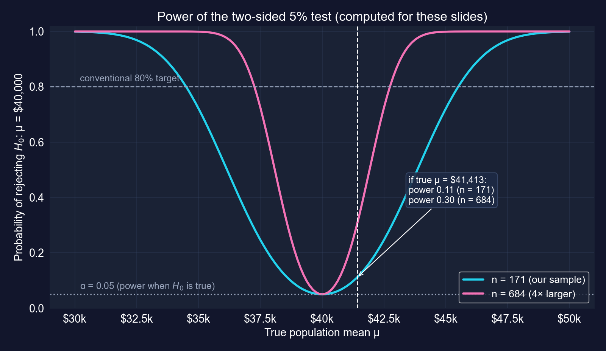
Even if $41,413 were the truth, the test would reject only 11% of the time. Failing to reject here says more about the sample size than about \(\mu\).
Gas prices · male earnings · GDP growth
| Example | Data | \(H_0\) | \(t\) | \(p\) | Decision | Lesson |
|---|---|---|---|---|---|---|
| Gas prices | 32 stations, Yolo County | \(\mu = \$3.81\) | −5.26 | < 0.0001 | reject | a small gap can be very precise |
| Male earnings | 191 men aged 30 | \(\mu = \$50{,}000\) | 0.50 | 0.617 | do not reject | heavy tails, imprecise mean |
| GDP growth | 241 quarters, U.S. | \(\mu = 2.0\%\) | −0.07 | 0.946 | do not reject | dependent data, SE too small |
One recipe, three verdicts. The interpretation always depends on the data behind the numbers.
Question. Is the mean price at Yolo County gas stations different from the California average of $3.81 per gallon?
Data. AED_GASPRICE.DTA: 32 stations in three cities (West Sacramento 15, Davis 10, Woodland 7).
\[H_0: \mu = 3.81 \qquad H_a: \mu \neq 3.81 \qquad t \text{ with } 31 \text{ degrees of freedom}\]
A two-sided question: prices could be higher or lower than the state average.
import numpy as np # square roots
import pandas as pd # tabular data
from scipy import stats # t distribution
url = "https://raw.githubusercontent.com/quarcs-lab/data-open/master/AED/AED_GASPRICE.DTA"
price = pd.read_stata(url)["price"] # price per gallon at 32 stations
mean_price = price.mean() # sample mean
std_price = price.std(ddof=1) # sample std dev
n_price = len(price) # 32 stations
se_price = std_price / np.sqrt(n_price) # standard error
mu0_price = 3.81 # California state average
t_stat_price = (mean_price - mu0_price) / se_price # distance in SEs
p_value_price = 2 * (1 - stats.t.cdf(abs(t_stat_price), n_price - 1)) # two-sided p
print(f"mean {mean_price:.4f}, se {se_price:.4f}, t {t_stat_price:.4f}, p {p_value_price:.6f}")| Value | |
|---|---|
| \(n\) | 32 |
| Mean | $3.6697 |
| Std. dev. | $0.1510 |
| Std. error | $0.0267 |
| \(t\) | −5.2577 |
| \(p\) (two-sided) | 0.00001 |
| 95% CI | [$3.615, $3.724] |
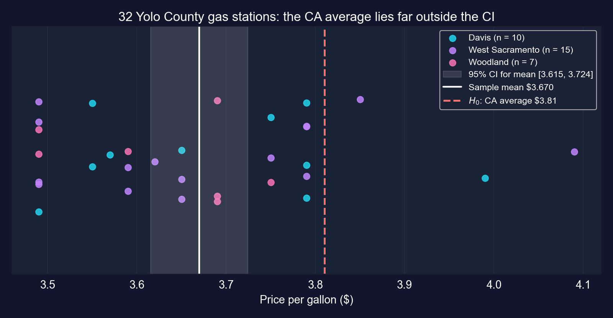
Reject \(H_0\): Yolo County prices are lower than the state average, and $3.81 lies far outside the 95% CI.
Key Concept 4.5: a small difference can be highly significant when it is precisely measured. Significance is about the gap relative to its SE, not its size.
A \(p\)-value of 0.00001 settles the sampling-noise question only. It cannot fix a non-random sample or a mismatched benchmark.
Data. AED_EARNINGSMALE.DTA: 191 men aged 30 working full time, 2010.
The chapter’s test is two-sided:
\[H_0: \mu = 50{,}000 \qquad H_a: \mu \neq 50{,}000\]
The question is directional (“more than”), so its natural form is one-sided; the chapter defers that to section 4.6. These slides report both.
import numpy as np # square roots
import pandas as pd # tabular data
from scipy import stats # t distribution
url = "https://raw.githubusercontent.com/quarcs-lab/data-open/master/AED/AED_EARNINGSMALE.DTA"
earnings_male = pd.read_stata(url)["earnings"] # 191 men, annual earnings
mean_male = earnings_male.mean() # sample mean
std_male = earnings_male.std(ddof=1) # sample std dev
n_male = len(earnings_male) # 191
se_male = std_male / np.sqrt(n_male) # standard error
mu0_male = 50000 # hypothesized value
t_stat_male = (mean_male - mu0_male) / se_male # distance in SEs
p_value_male = 2 * (1 - stats.t.cdf(abs(t_stat_male), n_male - 1)) # two-sided p
p_upper_male = 1 - stats.t.cdf(t_stat_male, n_male - 1) # one-sided (Ha: mu > 50,000)
print(f"mean {mean_male:,.2f}, se {se_male:,.2f}, t {t_stat_male:.4f}") # estimate and t
print(f"two-sided p {p_value_male:.4f}, one-sided p {p_upper_male:.4f}") # both p-values| Value | |
|---|---|
| \(n\) | 191 |
| Mean | $52,353.93 |
| Median | $38,000 |
| Std. dev. | $65,034.74 |
| Std. error | $4,705.75 |
| \(t\) | 0.5002 |
| \(p\) (two-sided) | 0.6175 |
| \(p\) (one-sided, \(H_a: \mu > 50{,}000\)) | 0.3087 |
| 95% CI | [$43,072, $61,636] |
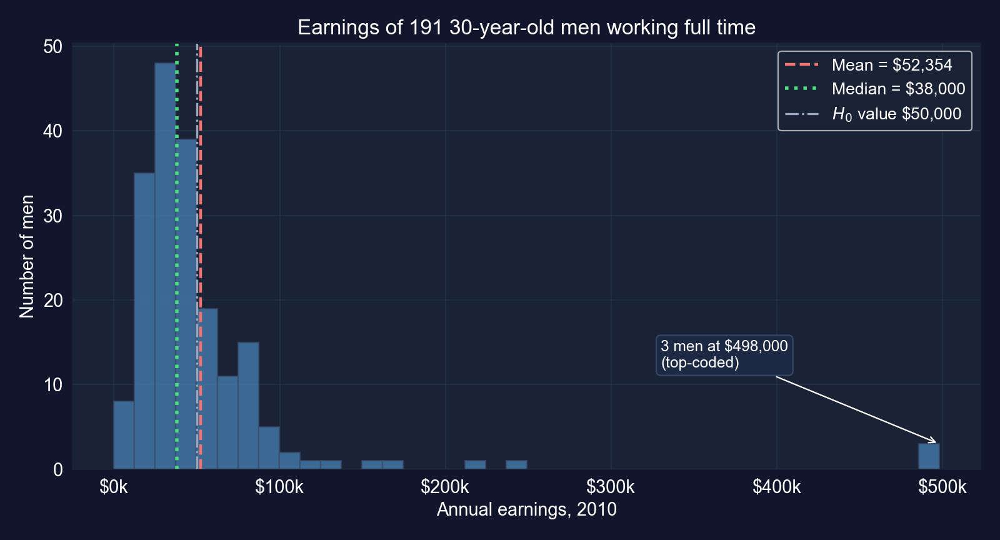
Do not reject either way. Whether men’s mean earnings exceed $50,000 is unresolved; the CI runs from $43,100 to $61,600.
Not rejecting here is mostly a statement about noise. A mean driven by three people is a fragile target for inference.
Data. AED_REALGDPPC.DTA: U.S. real GDP per capita, quarterly, 1959Q1–2020Q1. The variable growth is the year-over-year growth rate, so it starts in 1960Q1: 241 quarterly observations.
\[H_0: \mu = 2.0 \qquad H_a: \mu \neq 2.0 \quad (\text{percent per year})\]
Note what the 241 observations are: overlapping four-quarter growth rates, not 241 separate years.
import numpy as np # square roots
import pandas as pd # tabular data
from scipy import stats # t distribution
url = "https://raw.githubusercontent.com/quarcs-lab/data-open/master/AED/AED_REALGDPPC.DTA"
growth = pd.read_stata(url)["growth"].dropna() # first 4 quarters have no YoY growth
mean_growth = growth.mean() # average growth, % per year
std_growth = growth.std(ddof=1) # sample std dev
n_growth = len(growth) # 241 quarters
se_growth = std_growth / np.sqrt(n_growth) # SE, assuming independent observations
mu0_growth = 2.0 # benchmark under H0
t_stat_growth = (mean_growth - mu0_growth) / se_growth # distance in SEs
p_value_growth = 2 * (1 - stats.t.cdf(abs(t_stat_growth), n_growth - 1)) # two-sided p
print(f"mean {mean_growth:.4f}, se {se_growth:.4f}, t {t_stat_growth:.4f}, p {p_value_growth:.4f}")
print(f"lag-1 autocorrelation {growth.autocorr(1):.2f}") # neighbouring quarters move together| Value | |
|---|---|
| \(n\) (quarters) | 241 |
| Mean | 1.9905% |
| Std. dev. | 2.1781 |
| Std. error (i.i.d.) | 0.1403 |
| \(t\) | −0.0680 |
| \(p\) (two-sided) | 0.9458 |
| 95% CI (i.i.d.) | [1.71%, 2.27%] |
| Lag-1 autocorrelation | 0.87 |
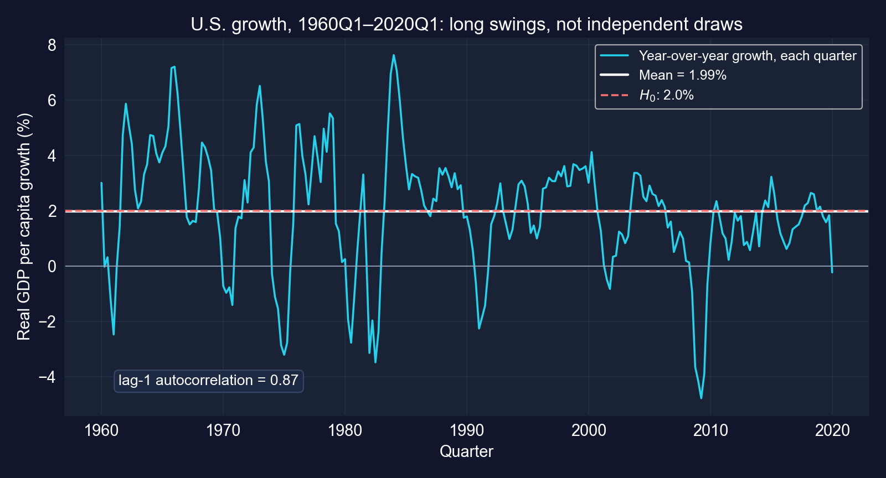
Do not reject 2%. But with a lag-1 correlation of 0.87, the i.i.d. standard error understates the true uncertainty.
Key Concept 4.6 applies here too: the data fail to reject 2%, but that does not show the long-run rate is 2%. With dependent data, report a wider interval.
One-sided (directional) tests · upper and lower tails
| Test | \(H_0\) | \(H_a\) | \(p\)-value | Reject if |
|---|---|---|---|---|
| Upper-tailed | \(\mu \leq \mu^*\) | \(\mu > \mu^*\) | \(\Pr[T_{n-1} \geq t]\) | \(t > t_{n-1,\,\alpha}\) |
| Lower-tailed | \(\mu \geq \mu^*\) | \(\mu < \mu^*\) | \(\Pr[T_{n-1} \leq t]\) | \(t < -t_{n-1,\,\alpha}\) |
| Two-sided | \(\mu = \mu^*\) | \(\mu \neq \mu^*\) | \(2\Pr[T_{n-1} \geq \lvert t \rvert]\) | \(\lvert t \rvert > t_{n-1,\,\alpha/2}\) |
One-sided tests are more powerful in the chosen direction and blind in the other.
import numpy as np # square roots
import pandas as pd # tabular data
from scipy import stats # t distribution
url = "https://raw.githubusercontent.com/quarcs-lab/data-open/master/AED/AED_EARNINGS.DTA"
earnings = pd.read_stata(url)["earnings"] # 171 women, annual earnings
n, se_earnings = len(earnings), earnings.std(ddof=1) / np.sqrt(len(earnings)) # n and SE
mu0 = 40000 # H0: mu <= 40,000
t_stat = (earnings.mean() - mu0) / se_earnings # same t as the two-sided test
p_value_upper = 1 - stats.t.cdf(t_stat, n - 1) # upper-tail area only
t_crit_upper = stats.t.ppf(0.95, n - 1) # all 5% in the upper tail
print(f"t = {t_stat:.4f}, one-sided p = {p_value_upper:.4f}, critical = {t_crit_upper:.4f}")| One-sided | Two-sided | |
|---|---|---|
| \(t\)-statistic | 0.7237 | 0.7237 |
| \(p\)-value | 0.2351 | 0.4703 |
| Critical value | 1.6539 | ±1.9740 |
| Decision | do not reject | do not reject |
\(0.2351 = 0.4703 / 2\), because \(t > 0\) points the way \(H_a\) predicts
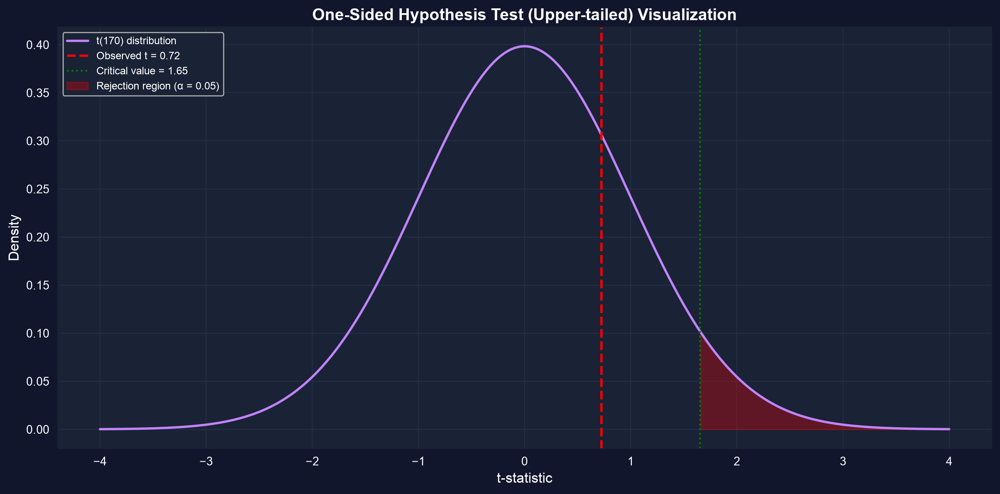
We cannot conclude that mean earnings exceed $40,000. The gap is small relative to its SE, whichever test we use.
Decide the direction before looking at the data. A one-sided test chosen afterwards has a true false-alarm rate of 10%, not 5%.
Proportions · binary data · the \(z\) test
\[\hat{p} = \bar{x} = \frac{\#\text{yes}}{n} \qquad \text{se}(\hat{p}) = \sqrt{\frac{\hat{p}(1-\hat{p})}{n}} \qquad \text{CI: } \hat{p} \pm z_{\alpha/2}\,\text{se}(\hat{p})\]
Everything learned about means carries over; only the SE formula changes.
import numpy as np # square roots
from scipy import stats # normal distribution
n_total = 921 # voters polled
n_success = 480 # intend to vote Democrat
p_hat = n_success / n_total # sample proportion
se_prop = np.sqrt(p_hat * (1 - p_hat) / n_total) # SE at p-hat (for the CI)
z_crit = 1.96 # normal critical value, 95%
ci_lower_prop = p_hat - z_crit * se_prop # lower bound
ci_upper_prop = p_hat + z_crit * se_prop # upper bound
p0 = 0.50 # H0: tied race
se_under_h0 = np.sqrt(p0 * (1 - p0) / n_total) # SE implied by H0
z_stat = (p_hat - p0) / se_under_h0 # z statistic
p_value_prop = 2 * (1 - stats.norm.cdf(abs(z_stat))) # two-sided p (normal)
print(f"p_hat {p_hat:.4f}, se {se_prop:.4f}") # estimate and its SE
print(f"95% CI [{ci_lower_prop:.4f}, {ci_upper_prop:.4f}]") # interval
print(f"z {z_stat:.4f}, p {p_value_prop:.4f}") # test of a tied race| Value | |
|---|---|
| \(\hat{p}\) | 0.5212 |
| SE | 0.0165 |
| 95% CI | [0.4889, 0.5534] |
| Margin of error | ±3.2 pp |
| \(z\) (vs 0.50) | 1.2851 |
| \(p\)-value | 0.1988 |
\(n\hat{p} = 480\), \(n(1-\hat{p}) = 441\): both far above 10
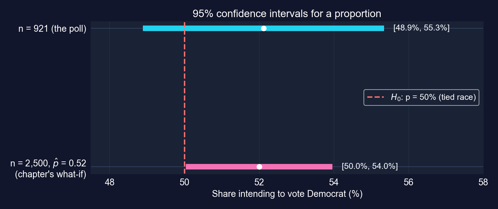
Do not reject a tied race: the CI [48.9%, 55.3%] contains 50%. The lead is 2.1 percentage points with a ±3.2-point margin.
Nothing about the voters changed, only the sample size. Statistical significance is as much about \(n\) as about the effect.
The reported margin of error (±3.2 points) is a floor on the real uncertainty, not a ceiling.
Mendez convergence-clubs data · 108 countries · 1990 and 2014 · six tasks
Data. Mendez (2020) convergence-clubs panel: 108 countries × 25 years (1990–2014) = 2,700 observations. We use labor productivity lp (output per worker, in dollars) for 1990 and 2014, and region.
| Task | Question | Tool (section) |
|---|---|---|
| 1 | Range of mean productivity in 2014? | CI, 95% vs 99% (4.3) |
| 2 | Did mean productivity change, 1990 → 2014? | two-sample and paired \(t\) tests (4.4) |
| 3 | Is Africa below Europe? | two-sample test, CI for a difference |
| 4 | Does the 2014 mean exceed $50,000? | one-sided test (4.6) |
| 5 | Did more than half of countries grow? | proportions (4.7) |
| 6 | Which regions differ? | many tests, multiple testing |
Six tasks, one dataset: the chapter’s whole toolkit on a development question.
import numpy as np # square roots
import pandas as pd # tabular data
from scipy import stats # t and normal distributions
import matplotlib.pyplot as plt # plots
url = ("https://raw.githubusercontent.com/quarcs-lab/" # Mendez (2020) repository
"mendez2020-convergence-clubs-code-data/master/assets/dat.csv")
df = pd.read_csv(url).set_index(["country", "year"]) # panel indexed by country-year
lp_1990 = df.loc[df.index.get_level_values("year") == 1990, "lp"] # productivity, 1990
lp_2014 = df.loc[df.index.get_level_values("year") == 2014, "lp"] # productivity, 2014
print(f"Observations: {len(df):,}; countries: {df.index.get_level_values('country').nunique()}")
print(f"1990: n={len(lp_1990)}, mean={lp_1990.mean():,.0f}, std={lp_1990.std():,.0f}")
print(f"2014: n={len(lp_2014)}, mean={lp_2014.mean():,.0f}, std={lp_2014.std():,.0f}")| 1990 | 2014 | |
|---|---|---|
| Countries | 108 | 108 |
| Mean | $23,224 | $40,977 |
| Median | $16,985 | $32,781 |
| Std. dev. | $20,089 | $33,853 |
| Std. error | $1,933 | $3,258 |
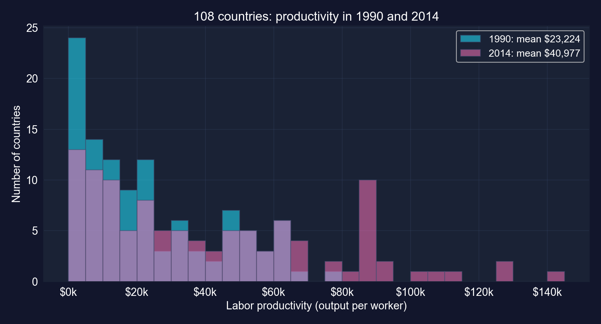
Mean productivity rose 76% and the cross-country standard deviation rose 69%. Both distributions are right-skewed.
# continues from the previous block
n_2014 = len(lp_2014) # 108 countries
mean_2014 = lp_2014.mean() # blank 1: sample mean
std_2014 = lp_2014.std() # blank 2: sample std dev
se_2014 = std_2014 / np.sqrt(n_2014) # standard error
t_crit_95 = stats.t.ppf(1 - 0.05/2, df=n_2014 - 1) # blank 3: df = n - 1
me_95 = t_crit_95 * se_2014 # 95% margin of error
ci_95 = (mean_2014 - me_95, mean_2014 + me_95) # blanks 4-5: the bounds
t_crit_99 = stats.t.ppf(1 - 0.01/2, df=n_2014 - 1) # 99% critical value
me_99 = t_crit_99 * se_2014 # 99% margin of error: wider
ci_99 = (mean_2014 - me_99, mean_2014 + me_99) # 99% bounds
se_1990 = lp_1990.std() / np.sqrt(len(lp_1990)) # 1990 for comparison
me_1990 = stats.t.ppf(0.975, df=len(lp_1990) - 1) * se_1990 # 1990 margin
print(ci_95, ci_99, 2 * me_95, 2 * me_1990) # bounds and widths| Mean | 95% CI | 95% width | 99% CI | 99% width | |
|---|---|---|---|---|---|
| 2014 | $40,977 | [$34,519, $47,435] | $12,915 | [$32,434, $49,520] | $17,086 |
| 1990 | $23,224 | [$19,392, $27,056] | $7,664 | [$18,154, $28,293] | $10,139 |
\(t_{107,\,0.025} = 1.982\), \(t_{107,\,0.005} = 2.623\); \(n = 108\) in both years · computed for these slides
Precision depends on dispersion as well as sample size: same 108 countries, much less precise mean.
# continues from the previous block
se_1990, se_2014 = lp_1990.std() / np.sqrt(108), lp_2014.std() / np.sqrt(108) # each SE
se_diff = np.sqrt(se_1990**2 + se_2014**2) # blanks 1-2: SE of the difference
t_stat = (lp_2014.mean() - lp_1990.mean()) / se_diff # blanks 3-4: Welch t
t_scipy, p_scipy = stats.ttest_ind(lp_2014, lp_1990, equal_var=False) # blanks 5-6
print(f"Welch: diff {lp_2014.mean() - lp_1990.mean():,.0f}, se {se_diff:,.0f}")
print(f" t {t_scipy:.3f}, p {p_scipy:.2e}") # blank 7: Reject
# computed for these slides: the same 108 countries appear in both years
x14, x90 = lp_2014.droplevel("year"), lp_1990.droplevel("year") # align by country
t_pair, p_pair = stats.ttest_rel(x14, x90) # paired test = one-sample t on the changes
change = x14 - x90 # within-country change
print(f"Paired: mean change {change.mean():,.0f}, se {change.std() / np.sqrt(108):,.0f}")
print(f" t {t_pair:.3f}, p {p_pair:.2e}") # paired test result| Welch (independent samples) | Paired (same countries) | |
|---|---|---|
| Mean change, 1990 → 2014 | $17,753 | $17,753 |
| SE of the change | $3,788 | $1,628 |
| \(t\) | 4.687 | 10.904 |
| Degrees of freedom | 174.0 | 107 |
| \(p\)-value | 0.000006 | < 10⁻¹⁸ |
| 95% CI for the change | [$10,277, $25,229] | [$14,526, $20,981] |
Paired results computed for these slides · Welch is the chapter’s template
Reject \(H_0\) either way: mean productivity rose by about $17,800 (+76%). Pairing cuts the SE by 57%.
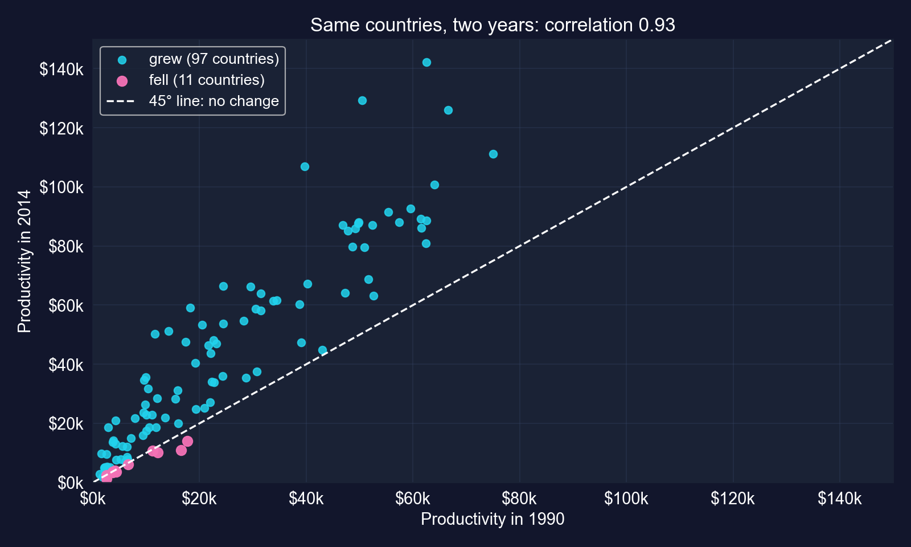
The two years are correlated 0.93: rich countries stayed rich. Differencing removes that shared level, leaving only the change.
# continues from the previous block
df_2014 = df.loc[df.index.get_level_values("year") == 2014] # 2014 cross-section
lp_africa = df_2014.loc[df_2014["region"] == "Africa", "lp"] # 26 countries
lp_europe = df_2014.loc[df_2014["region"] == "Europe", "lp"] # 30 countries
t_stat, p_val = stats.ttest_ind(lp_africa, lp_europe, equal_var=False) # Welch test
v_a, v_e = lp_africa.var() / len(lp_africa), lp_europe.var() / len(lp_europe) # s^2/n
diff = lp_africa.mean() - lp_europe.mean() # difference in means
se_diff = np.sqrt(v_a + v_e) # SE of the difference
df_w = (v_a + v_e)**2 / (v_a**2 / (len(lp_africa) - 1) + v_e**2 / (len(lp_europe) - 1)) # Welch df
t_c = stats.t.ppf(0.975, df_w) # critical value at the Welch df
print(f"diff {diff:,.0f}, t {t_stat:.2f}, p {p_val:.1e}") # gap and test
print(f"95% CI [{diff - t_c*se_diff:,.0f}, {diff + t_c*se_diff:,.0f}]") # CI for the gap| Africa | Europe | |
|---|---|---|
| \(n\) | 26 | 30 |
| Mean | $11,211 | $72,572 |
| Median | $5,722 | $66,862 |
| Std. dev. | $12,261 | $25,966 |
| Africa − Europe | Value |
|---|---|
| Difference | −$61,361 |
| SE (Welch, df 42.6) | $5,316 |
| \(t\) | −11.54 |
| 95% CI | [−$72,084, −$50,638] |
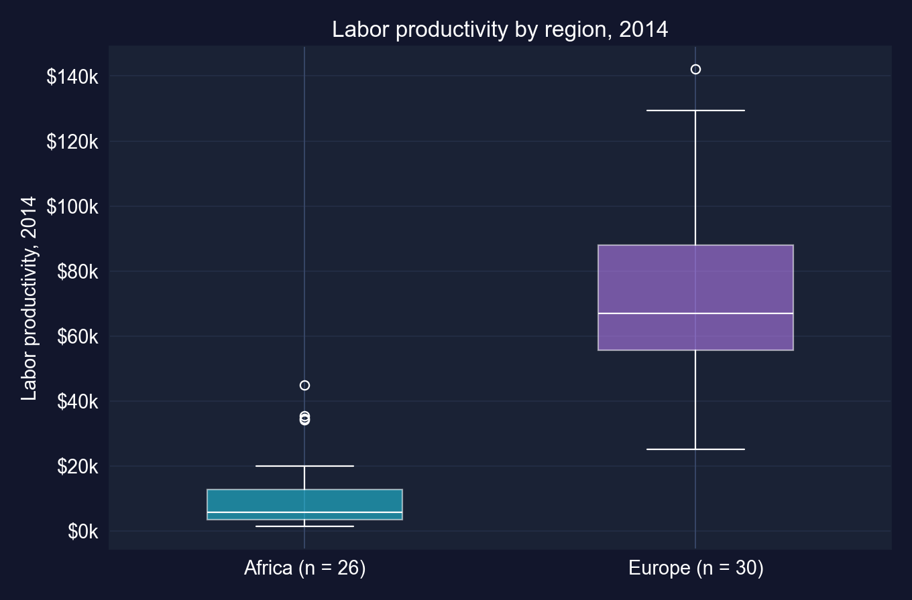
Reject equal means (\(p < 10^{-13}\)). The average European worker produces 6.5 times as much as the average African worker.
# continues from the previous block
res_greater = stats.ttest_1samp(lp_2014, popmean=50000, alternative="greater") # Ha: mu > 50,000
res_two = stats.ttest_1samp(lp_2014, popmean=50000, alternative="two-sided") # Ha: mu != 50,000
res_less = stats.ttest_1samp(lp_2014, popmean=50000, alternative="less") # for contrast only
print(f"mean {lp_2014.mean():,.0f}, t {res_greater.statistic:.3f}") # t is negative
print(f"p (greater) {res_greater.pvalue:.4f}, p (two-sided) {res_two.pvalue:.4f}") # chapter's
print(f"p (less) {res_less.pvalue:.4f}") # never switch to this after seeing t| \(H_a\) | \(t\) | \(p\)-value | Decision at 5% |
|---|---|---|---|
| \(\mu > 50{,}000\) (the chapter’s claim) | −2.770 | 0.9967 | do not reject |
| \(\mu \neq 50{,}000\) | −2.770 | 0.0066 | reject |
| \(\mu < 50{,}000\) (not pre-specified) | −2.770 | 0.0033 | — |
Sample mean $40,977 · one-sided critical value 1.659 · computed for these slides
A one-sided \(p\)-value above 0.5 means the data point against the direction you hoped for.
# continues from the previous block
growth = (lp_2014.droplevel("year") > lp_1990.droplevel("year")).astype(int) # 1 if lp rose
n = len(growth) # 108 countries
p_hat = growth.mean() # share of growth winners
se_p = np.sqrt(p_hat * (1 - p_hat) / n) # SE at p-hat (for the CI)
ci = (p_hat - 1.96 * se_p, p_hat + 1.96 * se_p) # 95% normal CI
z = (p_hat - 0.5) / np.sqrt(0.5 * 0.5 / n) # z test of H0: p = 0.5
p_val = 2 * stats.norm.sf(abs(z)) # two-sided p-value
print(f"{growth.sum()} of {n}: p_hat {p_hat:.3f}, CI [{ci[0]:.3f}, {ci[1]:.3f}]") # share
print(f"z {z:.2f}, p {p_val:.1e}") # test of H0: p = 0.5| Value | |
|---|---|
| Countries with higher productivity in 2014 | 97 of 108 |
| \(\hat{p}\) | 0.898 |
| 95% CI | [0.841, 0.955] |
| \(z\) (vs 0.5) | 8.28 |
| \(p\)-value | < 10⁻¹⁵ |
Computed for these slides · \(n(1-\hat{p}) = 11\), just above the rule-of-thumb 10
The 11 countries where productivity fell: Cameroon, Central African Republic, Democratic Republic of Congo, Haiti, Honduras, Kyrgyz Republic, Nicaragua, Niger, Sierra Leone, Tajikistan, Togo.
Far more than half of countries grew, but all 11 that fell were in the poorer half in 1990: growth was not shared by everyone.
# continues from the previous block (df_2014 from Task 3)
import itertools # all pairs of regions
by_region = df_2014.groupby("region")["lp"] # 5 regions
stats_r = by_region.agg(["count", "mean", "std"]) # n, mean, s
stats_r["se"] = stats_r["std"] / np.sqrt(stats_r["count"]) # SE of each mean
stats_r["tc"] = stats.t.ppf(0.975, stats_r["count"] - 1) # t critical, df = n - 1
for a, b in itertools.combinations(sorted(stats_r.index), 2): # 10 pairs
xa = df_2014.loc[df_2014["region"] == a, "lp"] # region a
xb = df_2014.loc[df_2014["region"] == b, "lp"] # region b
print(a, b, stats.ttest_ind(xa, xb, equal_var=False)) # Welch test
stats_r["lo"] = stats_r["mean"] - stats_r["tc"] * stats_r["se"] # lower 95% bound
stats_r["hi"] = stats_r["mean"] + stats_r["tc"] * stats_r["se"] # upper 95% bound
print(stats_r.round(0)) # the CI table| Region | \(n\) | Mean | Std. error | 95% CI |
|---|---|---|---|---|
| Africa | 26 | $11,211 | $2,405 | [$6,259, $16,164] |
| Americas | 22 | $32,836 | $5,167 | [$22,092, $43,581] |
| Asia | 28 | $38,725 | $6,282 | [$25,836, $51,615] |
| Europe | 30 | $72,572 | $4,741 | [$62,876, $82,268] |
| Oceania | 2 | $75,067 | $10,980 | [−$64,444, $214,577] |
Oceania = Australia and New Zealand; with 1 degree of freedom, \(t_{1,\,0.025} = 12.7\) · computed for these slides
Four regions are estimated with useful precision; Oceania, with two countries, is not.
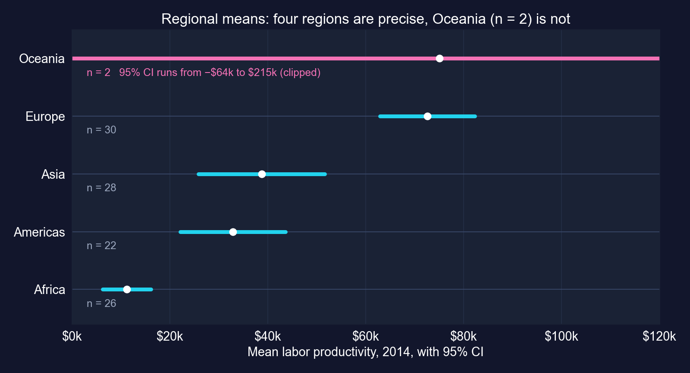
With two countries, Oceania’s interval even includes negative productivity. Its mean is not “known” in any useful sense.
| Pair | Difference | \(t\) | \(p\) | 5%? | Bonferroni (0.005)? |
|---|---|---|---|---|---|
| Africa − Europe | −$61,361 | −11.54 | < 0.0001 | ✓ | ✓ |
| Americas − Europe | −$39,736 | −5.67 | < 0.0001 | ✓ | ✓ |
| Asia − Europe | −$33,847 | −4.30 | 0.0001 | ✓ | ✓ |
| Africa − Asia | −$27,514 | −4.09 | 0.0002 | ✓ | ✓ |
| Africa − Americas | −$21,625 | −3.79 | 0.0007 | ✓ | ✓ |
| Americas − Asia | −$5,889 | −0.72 | 0.473 | ||
| Africa − Oceania | −$63,856 | −5.68 | 0.095 | ||
| Americas − Oceania | −$42,230 | −3.48 | 0.110 | ||
| Asia − Oceania | −$36,341 | −2.87 | 0.119 | ||
| Europe − Oceania | −$2,495 | −0.21 | 0.861 |
Welch tests · computed for these slides
With 10 tests at 5%, the chance of at least one false alarm is up to 40%. Here the same 5 pairs survive the Bonferroni cutoff of 0.005.
The right test depends on how the data were generated: same countries twice is not two independent samples.
DS4Bolivia · 333 municipalities · 9 departments · six tasks
Data. DS4Bolivia (ds4bolivia_v20250523.csv): 339 municipalities; 333 have complete data on the five variables used. Outcome: the Municipal Sustainable Development Index (IMDS), 0–100.
| Task | Question | Tool |
|---|---|---|
| 1 | National mean IMDS? | 95% CI |
| 2 | Is the average municipality at the midpoint, 50? | two-sided one-sample test |
| 3 | Which departments differ? | CI per department, forest plot |
| 4 | Is La Paz above the national mean? | one-sided test |
| 5 | How large is the gap between top and bottom departments? | two-sample test |
| 6 | What should a policy brief say? | summary table |
Same toolkit, new question: statistical significance versus policy relevance.
import numpy as np # square roots
import pandas as pd # tabular data
from scipy import stats # t distribution
import matplotlib.pyplot as plt # forest plot
url_bol = "https://raw.githubusercontent.com/quarcs-lab/ds4bolivia/master/ds4bolivia_v20250523.csv"
bol = pd.read_csv(url_bol) # 339 municipalities, 350+ columns
key_vars = ["mun", "dep", "imds", "ln_NTLpc2017", "pop2017"] # variables used here
bol_key = bol[key_vars].dropna().copy() # complete cases: 333 municipalities
print(bol_key["imds"].describe().round(2)) # IMDS summary statistics
print(bol_key["dep"].value_counts().sort_index()) # municipalities per department| IMDS | Value |
|---|---|
| Municipalities | 333 |
| Mean | 51.16 |
| Std. dev. | 6.76 |
| Min | 35.70 |
| Median | 50.80 |
| Max | 80.20 |
| Department | \(n\) | Department | \(n\) |
|---|---|---|---|
| La Paz | 87 | Chuquisaca | 29 |
| Santa Cruz | 55 | Beni | 18 |
| Cochabamba | 47 | Pando | 13 |
| Potosí | 38 | Tarija | 11 |
| Oruro | 35 |
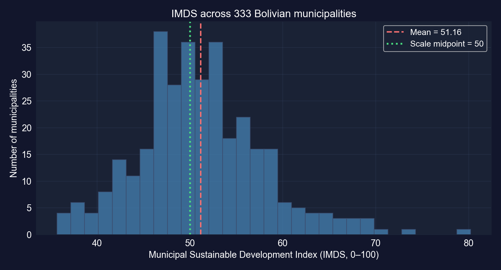
72% of municipalities score between 45 and 58. Department sizes vary eightfold, so department-level precision will vary too.
# continues from the previous block
n = len(bol_key["imds"]) # 333 municipalities
x_bar = bol_key["imds"].mean() # national mean IMDS
se = bol_key["imds"].std() / np.sqrt(n) # standard error
ci_low, ci_high = stats.t.interval(0.95, df=n - 1, loc=x_bar, scale=se) # Task 1: 95% CI
t_stat, p_value = stats.ttest_1samp(bol_key["imds"], popmean=50) # Task 2: H0: mu = 50
print(f"mean {x_bar:.4f}, se {se:.4f}, CI [{ci_low:.4f}, {ci_high:.4f}]")
print(f"t {t_stat:.4f}, p {p_value:.6f}") # reject H0 if p < 0.05| Task | Result |
|---|---|
| 1 · Mean IMDS | 51.1580 (SE 0.3704) |
| 1 · 95% CI | [50.43, 51.89] |
| 2 · \(H_0: \mu = 50\) | \(t\) = 3.1258, \(p\) = 0.0019 → reject |
| 2 · Gap from 50 | 1.16 points on a 0–100 scale |
Key Concept 4.12 in action: a large sample makes a small, policy-irrelevant gap statistically significant.
# continues from the previous block
dept_stats = (bol_key.groupby("dep")["imds"] # one row per department
.agg(["mean", "std", "count"]).sort_values("mean")) # mean, s, n
dept_stats["se"] = dept_stats["std"] / np.sqrt(dept_stats["count"]) # SE per department
dept_stats["t_crit"] = stats.t.ppf(0.975, df=dept_stats["count"] - 1) # df = n - 1 each
dept_stats["ci_low"] = dept_stats["mean"] - dept_stats["t_crit"] * dept_stats["se"] # lower
dept_stats["ci_high"] = dept_stats["mean"] + dept_stats["t_crit"] * dept_stats["se"] # upper
print(dept_stats[["mean", "se", "ci_low", "ci_high", "count"]].round(2)) # the table| Department | \(n\) | Mean | 95% CI |
|---|---|---|---|
| Tarija | 11 | 60.60 | [56.91, 64.29] |
| Santa Cruz | 55 | 54.31 | [53.01, 55.62] |
| Cochabamba | 47 | 52.50 | [50.01, 55.00] |
| La Paz | 87 | 50.98 | [49.83, 52.12] |
| Beni | 18 | 50.79 | [48.59, 52.98] |
| Oruro | 35 | 50.68 | [48.96, 52.41] |
| Chuquisaca | 29 | 47.80 | [45.28, 50.31] |
| Potosí | 38 | 47.57 | [45.05, 50.09] |
| Pando | 13 | 45.92 | [42.39, 49.46] |
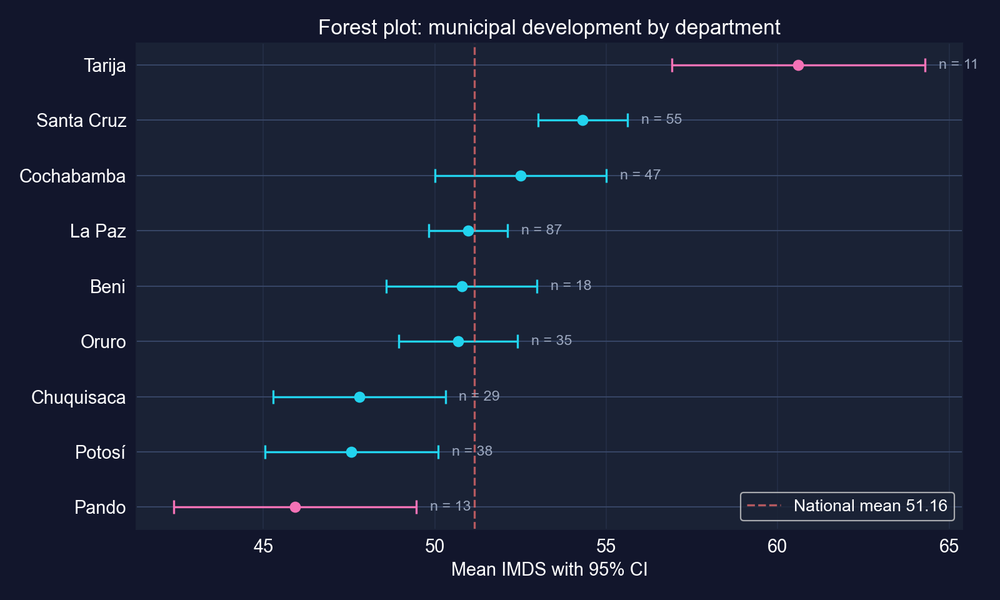
Tarija and Santa Cruz sit clearly above the national mean of 51.16; Chuquisaca, Potosí and Pando sit clearly below it.
# continues from the previous block
la_paz = bol_key[bol_key["dep"] == "La Paz"]["imds"] # 87 municipalities
national_mean = bol_key["imds"].mean() # 51.16, treated as a fixed benchmark
t_stat_lp, p_two = stats.ttest_1samp(la_paz, popmean=national_mean) # two-sided first
p_one = p_two / 2 if t_stat_lp > 0 else 1 - p_two / 2 # one-sided, Ha: mu_LP > national
print(f"La Paz mean {la_paz.mean():.4f}, t {t_stat_lp:.4f}, one-sided p {p_one:.4f}")| Value | |
|---|---|
| La Paz municipalities | 87 |
| La Paz mean IMDS | 50.98 |
| National mean (benchmark) | 51.16 |
| \(t\) | −0.312 |
| One-sided \(p\) (\(H_a\): above) | 0.622 |
| Two-sided \(p\) | 0.756 |
Housing the seat of government does not make the department’s municipalities more developed on average.
# continues from the previous block
dept_means = bol_key.groupby("dep")["imds"].mean() # mean IMDS by department
top_dept, bot_dept = dept_means.idxmax(), dept_means.idxmin() # Tarija and Pando
top_values = bol_key[bol_key["dep"] == top_dept]["imds"] # 11 municipalities
bot_values = bol_key[bol_key["dep"] == bot_dept]["imds"] # 13 municipalities
t_stat_2s, p_value_2s = stats.ttest_ind(top_values, bot_values) # pooled-variance test (chapter)
t_w, p_w = stats.ttest_ind(top_values, bot_values, equal_var=False) # Welch, for comparison
n1, n2 = len(top_values), len(bot_values) # group sizes
pooled_var = ((n1 - 1) * top_values.var() + (n2 - 1) * bot_values.var()) / (n1 + n2 - 2)
sp = np.sqrt(pooled_var) # pooled standard deviation
gap = top_values.mean() - bot_values.mean() # the development gap
print(f"gap {gap:.2f}, t {t_stat_2s:.3f}, p {p_value_2s:.1e}") # chapter's test
print(f"Welch t {t_w:.3f}, p {p_w:.1e}, Cohen's d {gap / sp:.2f}") # added checks| Tarija (top) | Pando (bottom) | |
|---|---|---|
| Municipalities | 11 | 13 |
| Mean IMDS | 60.60 | 45.92 |
| Std. dev. | 5.50 | 5.85 |
| Comparison | Value |
|---|---|
| Gap | 14.68 points |
| \(t\) (pooled) / \(p\) | 6.292 / 0.0000025 |
| \(t\) (Welch) / \(p\) | 6.326 / 0.0000024 |
| Cohen’s \(d\) | 2.58 SDs |
Welch and Cohen’s \(d\) computed for these slides
Real and large: the gap is about 2.6 within-department standard deviations, more than twice the national SD of IMDS.
A good brief reports the gap, its CI and its policy meaning, and says what the test cannot tell us.
Act III · The resolution
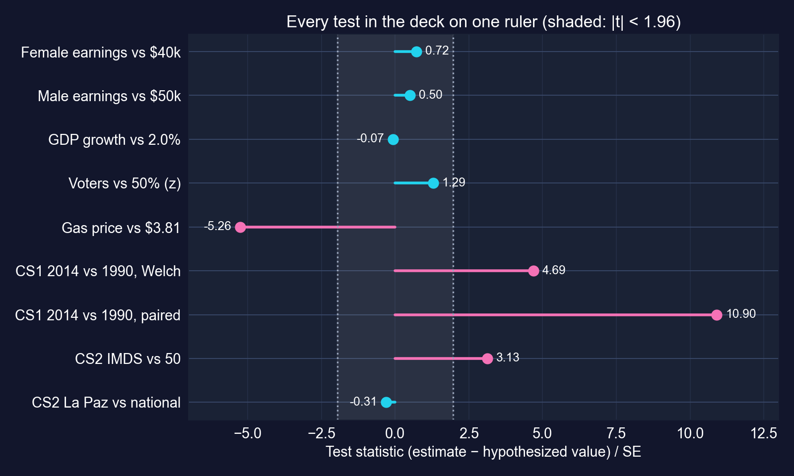
Test statistics from sections 4.4–4.7 and both case studies. Inside the shaded band, \(\lvert t \rvert < 1.96\): no rejection at 5%.
The same ±1.96 band decides every verdict. What changes is what the gap means.
| Test | Real? | Matters? | Could we tell? |
|---|---|---|---|
| Gas vs $3.81 | yes, \(t = -5.26\) | yes, ≈ $109/year | yes: tiny SE |
| Female earnings vs $40k | no, \(t = 0.72\) | possibly | no: power 0.11 at $41,413 |
| Male earnings vs $50k | no, \(t = 0.50\) | possibly | no: SE $4,706 from heavy tails |
| GDP growth vs 2% | no, \(t = -0.07\) | yes, 1 pp compounds | less than it looks: autocorrelation 0.87 |
| Poll vs 50% | no, \(z = 1.29\) | yes, elections are close | not at \(n = 921\); just at 2,500 |
| CS1 2014 vs 1990 | yes, paired \(t = 10.9\) | yes, +$17,753 | yes, once paired |
| CS2 IMDS vs 50 | yes, \(t = 3.13\) | barely: 1.2 points | yes: \(n = 333\) |
| CS2 Tarija vs Pando | yes, \(t = 6.29\) | yes, 14.7 points | yes, despite \(n\) = 11, 13 |
Significance answers only the first column. A complete answer fills in all three.
| Situation | Test | Python | Example |
|---|---|---|---|
| One mean vs a value | one-sample \(t\) | stats.ttest_1samp |
earnings vs $40,000 |
| Directional claim, fixed in advance | one-sided \(t\) | alternative="greater" |
La Paz vs national mean |
| Two independent groups | Welch two-sample \(t\) | stats.ttest_ind(…, equal_var=False) |
Africa vs Europe |
| Same units measured twice | paired \(t\) | stats.ttest_rel |
1990 vs 2014, same countries |
| Yes/no outcome | proportion \(z\) | stats.norm |
voters, growth winners |
| Many comparisons | adjust \(\alpha\) | Bonferroni \(\alpha/k\) | 10 regional pairs |
| Dependent over time | HAC SEs (Ch. 12, 17) | — | GDP growth |
Match the test to how the data were generated: independence, pairing, direction and the number of tests all matter.
Objection. “\(p < 0.05\), so the effect is real and important; \(p > 0.05\), so there is no effect.”
Response. Bolivia’s mean IMDS differs “significantly” from 50 by 1.2 points: real but unimportant. Female earnings were not significantly above $40,000, yet the test had an 11% chance of detecting a $1,400 gap: no rejection, but no evidence of no effect either.
Report the estimate and its confidence interval first; the \(p\)-value is a footnote to them.
These five questions turn a \(p\)-value from a verdict into evidence.